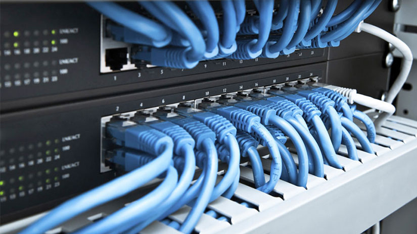

Suministro e Instalación de Puntos de Red
En BUARSOCA, nos especializamos en la instalación de puntos de red de alta calidad, asegurando una conectividad rápida y confiable para tu empresa. Nuestro equipo experto utiliza tecnología de vanguardia y ofrece soluciones personalizadas para optimizar la infraestructura de red.
¿Qué es? El suministro e instalación de puntos de red implica la creación de conexiones de red física mediante el uso de cables de red y dispositivos de conexión, como switches y routers. Esto permite que diferentes dispositivos dentro de una organización se comuniquen entre sí y con el mundo exterior.
¿Para qué sirve? Este servicio es fundamental para garantizar un acceso eficiente a Internet y a recursos compartidos, lo que facilita el trabajo colaborativo y mejora la productividad en un entorno empresarial.
Garantizamos eficiencia y soporte técnico permanente para que puedas centrarte en lo que realmente importa: el crecimiento de tu negocio. ¡Mejora tu conectividad con BUARSOCA y lleva tu empresa al siguiente nivel!

Servicio de Instalación de Enlace
El servicio de instalación de enlace consiste en la conexión de diferentes redes para facilitar la comunicación entre ellas. Este servicio es crucial para empresas que buscan mejorar la colaboración entre sucursales o diversas unidades de negocio.
¿Qué es? La instalación de enlace se refiere a la implementación de conexiones que permiten la comunicación entre diferentes redes locales (LAN) o entre una red local y una red externa (WAN). Esto puede implicar el uso de tecnología de cableado o soluciones inalámbricas.
¿Para qué sirve? Permite que los empleados trabajen de manera más integrada y eficiente, sin importar su ubicación física, y asegura que los datos y la información se compartan de forma rápida y segura.
Proporcionamos soluciones integrales que garantizan una transferencia de datos segura y eficiente, optimizando el flujo de información. Nuestros técnicos son expertos en el diseño e implementación de enlaces de alta capacidad, asegurando una conectividad estable.
Servicios de Ingeniería de Inspección Técnica
Los servicios de ingeniería de inspección técnica son fundamentales para garantizar que las instalaciones cumplan con los estándares de calidad y seguridad. Realizamos inspecciones minuciosas de tus sistemas eléctricos y de red, asegurando su correcto funcionamiento.
¿Qué es? Se trata de un proceso sistemático de evaluación que analiza la conformidad de las instalaciones y sistemas con las normativas y estándares establecidos. Esto incluye la revisión de cableados, dispositivos de red, y sistemas eléctricos.
¿Para qué sirve? Ayuda a identificar problemas potenciales antes de que se conviertan en costosas reparaciones, manteniendo así la continuidad operativa de tu empresa. Este servicio es clave para prevenir fallas, mejorar la seguridad y optimizar el rendimiento de los sistemas.
Nuestro enfoque proactivo y profesional permite a nuestros clientes confiar plenamente en sus instalaciones.
Arquitectura de Comunicación
La arquitectura de comunicación se refiere al diseño y estructuración de sistemas de comunicación dentro de una organización. Este servicio es esencial para optimizar el intercambio de información y la colaboración entre equipos.
¿Qué es? Consiste en la planificación y desarrollo de redes de comunicación, que incluyen la infraestructura física y los protocolos de comunicación necesarios para el funcionamiento eficaz de los sistemas de información.
¿Para qué sirve? Mejora el flujo de información y la colaboración entre equipos, optimizando la eficiencia operativa. Una buena arquitectura de comunicación permite a las organizaciones adaptarse rápidamente a los cambios y facilitar la toma de decisiones informadas.
Nuestros especialistas en comunicación trabajan para diseñar sistemas eficientes que se alineen con las necesidades específicas de tu empresa, mejorando la productividad y el flujo de trabajo.
Servicios de Consultoría y Asesoría
Los servicios de consultoría y asesoría ofrecen a las empresas el conocimiento experto necesario para mejorar sus operaciones y tomar decisiones informadas. En BUARSOCA, proporcionamos asesoría personalizada en tecnología y procesos.
¿Qué es? Se refiere a la ayuda brindada por expertos para evaluar y mejorar los procesos de negocio, así como para implementar nuevas tecnologías o estrategias. Esto puede incluir auditorías de sistemas, análisis de necesidades y recomendaciones para mejoras.
¿Para qué sirve? Proporciona a las empresas estrategias y soluciones para optimizar procesos y adoptar nuevas tecnologías. Este servicio es esencial para las organizaciones que desean mantenerse competitivas y adaptarse a un entorno empresarial en constante cambio.
Nuestro objetivo es ayudarte a identificar áreas de mejora y ofrecerte soluciones innovadoras que impulsen tu crecimiento. Ya sea que necesites asesoramiento en la implementación de nuevas tecnologías o en la optimización de procesos existentes, estamos aquí para apoyarte.
Trabajo de Arquitectura en General
El trabajo de arquitectura en general abarca una amplia gama de servicios relacionados con el diseño y la planificación de infraestructuras. Desde la concepción inicial hasta la ejecución final, nuestros arquitectos se enfocan en crear soluciones efectivas que se adapten a tus necesidades específicas.
¿Qué es? Implica la creación de proyectos arquitectónicos, que pueden incluir edificios, instalaciones industriales, espacios comerciales y más. Este proceso abarca la investigación, diseño y supervisión de la construcción.
¿Para qué sirve? Asegura que los proyectos estén alineados con las necesidades del cliente y las regulaciones locales, promoviendo la sostenibilidad y eficiencia. Un diseño arquitectónico bien planificado puede maximizar el uso de recursos y proporcionar un entorno funcional y atractivo.
Nos aseguramos de que cada proyecto esté alineado con las regulaciones locales y cumpla con los estándares de calidad. Con un enfoque en la sostenibilidad y la eficiencia, nuestros diseños buscan maximizar el uso de recursos y minimizar el impacto ambiental.